次のお寺にGO！
かつてのランナー王国の首都、チェンライ。
つい最近まではゴールデントライアングルのゲートウェイとして有名な街だった。
街にはビルマ語カンボジア語（多分）の他に中国語の看板が目立つ。
そう、ゴールデントライアングルのすぐ先は中国、昆明なのだ。
そんな歴史的にも地理的にも重要な北の都は今ではチェンマイから流れてきたバックパッカーの聖地でもあるらしい。
街には白人のパッカー共が大好きなオープンカフェで半裸で読書したりしていて…彼らにとってはパタヤもチェンライも変わらんのだろうか。
そんなチェンライで一番格式の高いワットプラケオに行く事になったのは、積極的な理由がからではない。
単にバスの予約が取れず時間が余っちゃったので「まあ、暇つぶしに行ってみようか」という程度のノリで行ってみただけなので過度な期待は私もしてないが皆さんもしないようにお願いしますね。
ワットプラケオといえばバンコクにある同名の寺が有名だ。
タイで一番格式の高い寺院とされるバンコクのワットプラケオの本尊であるエメラルド仏、実はここチェンライのワットプラケオの出身なのだ。
話は15世紀にさかのぼる。
1434年にチェンライのワットプラケオにあったチェディ（仏塔）に雷が落ちて崩壊した塔の中からこのエメラルド仏が出てきた、という鮮烈なデビューを果たす。その後ランパーン、チェンマイと所在を移したが16世紀に侵攻してきたラオス人がルアンプラバンに持っていってしまったのだ。その後ビエンチャンに運ばれたが、タイとの戦争の際、ラマ1世が奪還、目出度く今のバンコクに安置された、という経緯なのだ。従って単に仏教上だけでなくタイ王国の歴史や政治を象徴する存在なのだ。
…というわけで、その超国宝級のエメラルド仏の実家、チェンライのワットプラケオである。
ゴミゴミした市場の近くにあるワットプラケオ。
さぞかし立派なお寺だろう、と期待していたら意外とこじんまりとした寺だった。
参拝客も地元民の散歩と私以外ほとんどいない。超国宝の故郷なのに…
入ると正面にお堂がある。木造の、いかにも北タイらしい佇まいだ。
境内は緑が多く、小さいながらも上品な佇まいである。
褄側の装飾や内部の装飾もこってり目でラオスやビルマの様式的な影響が見て取れる。
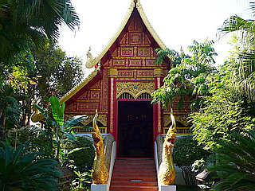 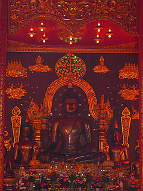
で、裏に回ったらもうひとつお堂があった。
何やら中が発光してますな…
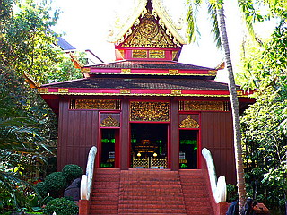
何とお堂の内部が緑色に！
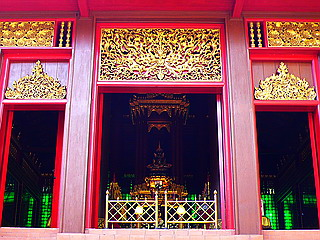
しかも中央にはバンコクに行ってしまったはずのエメラルド仏がいるじゃないですか！
ガイドブックによればこの仏像はプラ・ヨーク・チェンライといい、1990年に作られたものだという。
カナダの翡翠を中国で加工したものだという。
あ、エメラルド仏といっても本家バンコクのも翡翠ですからここのを取り立ててニセモノ呼ばわりしないでくださいね。
バンコクのエメラルド仏を見たのはもう随分前になるので明確には覚えてないが、良く似ていると思う。
ただ厨子がもう少し立派だったような気もするが。
恐らくこのエメラルド仏を迎えるにあたって新築したお堂なのだろう。
エメラルド仏だから緑の照明だろっ！という素晴らしく直裁的な判断からこのようなインテリアになったのだろう。
まるでどこぞの小洒落たクラブみたいじゃないか、エメラル堂。
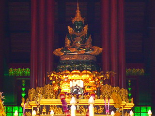
で、エメラル堂の脇には八角のチェディが。
若いお坊さん達、トラックの荷台に乗ってこれからお出かけの御様子。
すごく楽しそうだ。これからどこかに遊びにいくのだろうか。
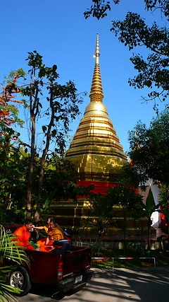
で、チェディの脇にあるランナーっぽいウィハーン（礼拝堂）。
これも新しい建物なのでもしかしたらエメラル堂と同時に建てられたのかも知れない。
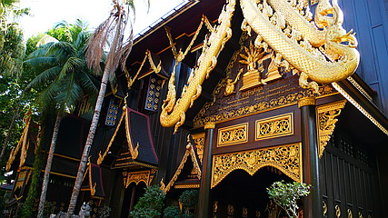
外見もゴージャスだが内部もゴージャス。
お寺というよりは美術館に近い雰囲気がある。
チョット本尊サマに金箔を貼ったり供え物をあげたり、という雰囲気ではない。
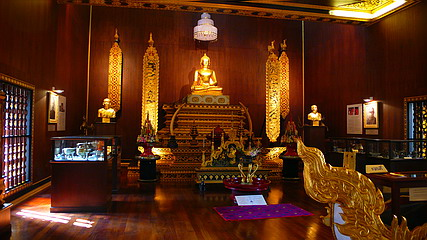
二階への階段の吹き抜けに良い感じの織物が下がっていた。
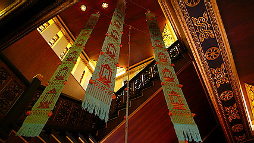
二階もオシャレ度の高い部屋だった。
今どきのタイの高級リゾートホテルのロビーとかってこんなんなんでしょ？行った事ないから知らないけど。
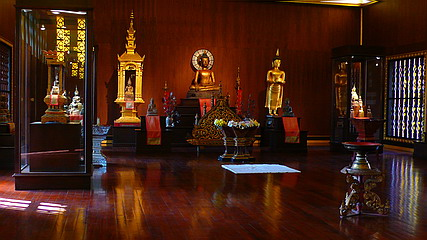
いつも地獄だ！大仏だ！みたいな荒っぽいところばっかり行ってるので、たま～にこういう所に来るとチョット照れますね～。
で、結局一番面白かったのは境内の隅でオバちゃんが作ってたコレ。
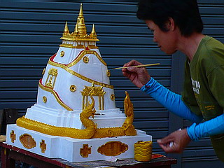
これ、バンコクのワットサケットじゃん。
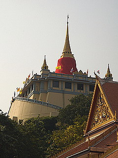
ホンモノのワットサケット
面白い。是非我が家にもひとつ欲しいものである。
山全体はこんなに険しくはないが山に取り付いた通路とかがやけにリアル。
こんな風にタイの有名寺院の模型を奉納する習慣でもあるのだろうか？
ひょっとしてタイ全土の有名寺院のミニチュアが奉納されているお寺、とかがあったりするんだろうか。
考えただけでもワクワクしてきちゃったじゃないか！
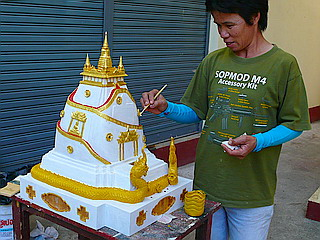
それにしてもオバちゃん、仏に仕える仕事の割にはめちゃハードなTシャツ着てますね…